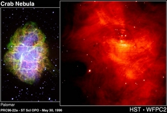

A pulsar is an extra-terrestrial source of radiation that has a regular periodicity, usually detected in the form of short bursts of radio emission. Most of the known pulsars are only visible in the radio region of the electromagnetic spectrum and are called radio pulsars, but there is a small number of pulsars that emit at optical wavelengths, X-ray wavelengths and gamma-ray wavelengths. The first radio pulsar was discovered in 1967 by Jocelyn Bell, a graduate student from Glasgow University working with Antony Hewish at the Mullard Radio Astronomy Observatory in Cambridge. Hewish received the 1974 Nobel Prize in Physics for his ‘decisive role in the discovery of pulsars’.
Interactive pulsar: adjust spin period, magnetic axis tilt, and viewing angle. Toggle sound to hear the pulse. Open fullscreen.
Radio pulsars are generally accepted to be highly-magnetised, rapidly rotating neutron stars with a light-house beam of radiation that produces the pulsed emission. Although the majority of pulsars spin at a rate of about once per second, the fastest known pulsar (PSR J1748–2446ad) rotates at 716 times a second, and anything spinning faster than around 50 milliseconds is generally referred to as a millisecond pulsar. Some radio pulsars are associated with supernova remnants, and it is generally accepted that pulsars are the collapsed cores of stars that were once more massive than 6-10 times the mass of the Sun. Radio pulsars have a “pulsar characteristic age” which is an estimate of how old they are and an associated dispersion measure, which is dependent upon the number of free electrons between us and the pulsar. As pulsars emit energy, their rotation frequency slows and they eventually cease radiating altogether.
X-ray pulsars emit X-rays at regular intervals, either because of magnetospheric emission in neutron stars, or through the accretion of matter from a companion. Accretion-powered X-ray sources with strong magnetic fields usually pulse relatively slowly (some as slowly as once every 20 minutes), as the magnetic field exerts a slow-down torque on the neutron star due to the presence of ionised material. Some X-ray pulsars rotate very rapidly, with spin frequencies in excess of 400 Hz. The spin frequency is simply the inverse of the rotation period and is measured in units of cycles per second (Hz). These millisecond X-ray pulsars are the precursors of the millisecond radio pulsars. The luminosity of X-ray pulsars varies over at least 5 orders of magnitude, from near the Eddington limit of 1031 J s-1 to less than 1026 J s-1. Different classes of X-ray pulsars exist:
- High-mass X-ray binaries (HMXBs) are usually powered by a strong stellar wind emanating from a massive companion star (5 – 30 times as massive as the neutron star).
- Low-mass X-ray binaries (LMXBs) are fed by mass transfer through Roche-lobe overflow, and have donor stars that are less massive than the neutron star. The mass transfer widens the orbit making LMXBs long-lived sources compared to HMXBs.

right: A close up of the Crab Pulsar from the Hubble Space Telescope
Credit: Jeff Hester and Paul Scowen (Arizona State University) and NASA
Optical pulsars form a very small subset of known pulsars. The most famous optical pulsar is the Crab pulsar, the remnant of a supernova explosion that was visible in 1054 AD (shown in the images on the right).
Gamma ray pulsars are quite rare, and most are young neutron stars with strong magnetic fields. A subset of these are visible as radio and optical pulsars, and the enigmatic Geminga has no detectable radio emission despite very deep searches. At gamma ray wavelengths near 100 MeV, the Vela pulsar is the strongest point source in the sky.
As of 2024, the number of known radio pulsars exceeds 3,500.